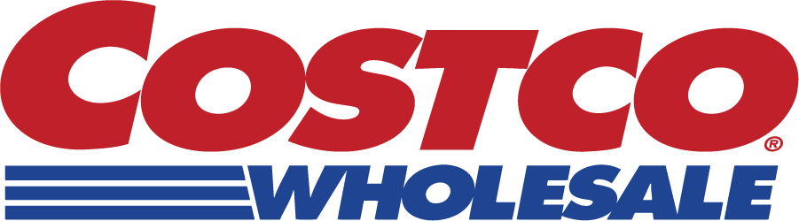
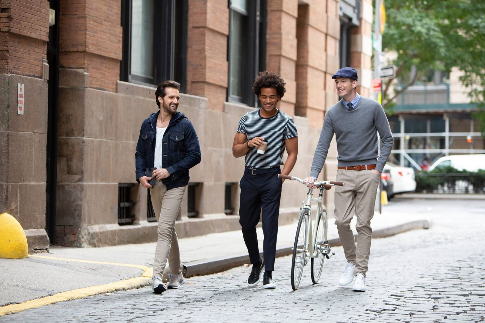
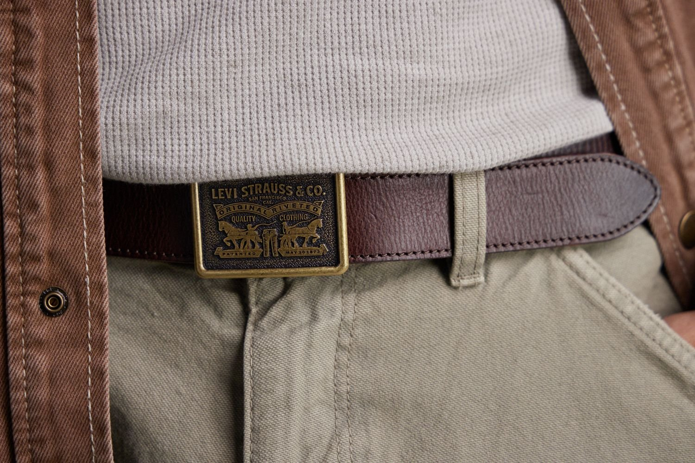
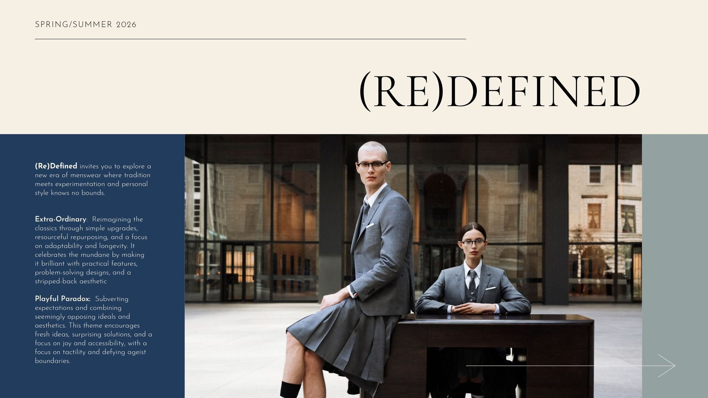
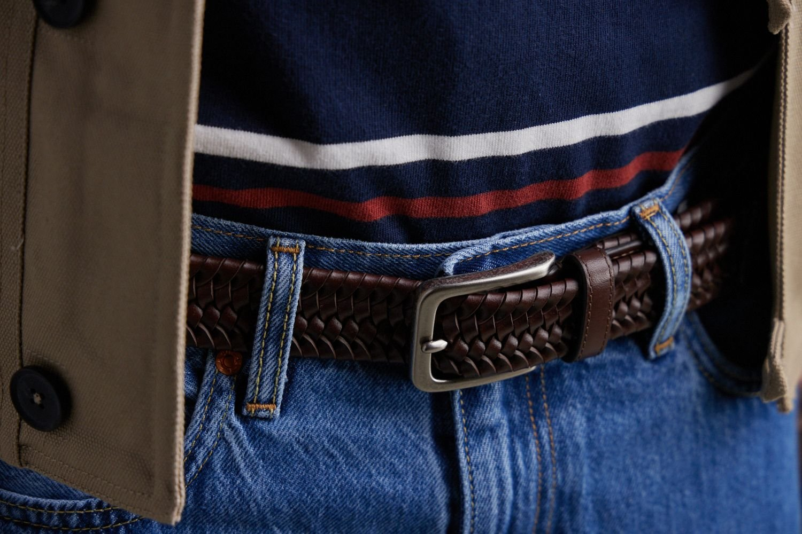
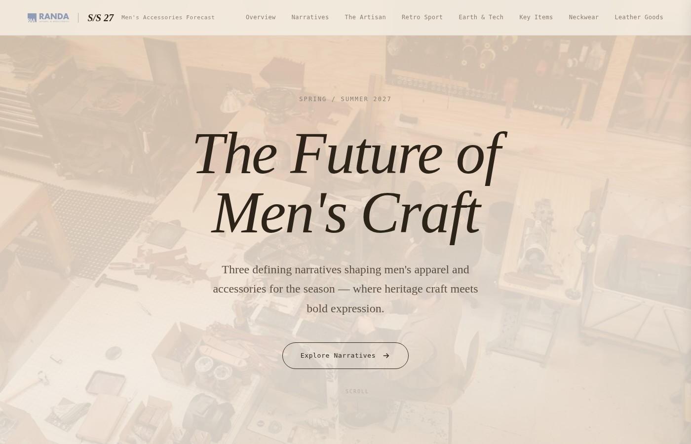

Senior Design Director — Chicago
I direct brand creative that holds up in the work — and on the P&L.
Creative lead for 11 licensed global brands. Part of the team that built one from zero.
Sixteen years directing creative for Levi's, Calvin Klein, Tommy Hilfiger, Columbia, Cole Haan, Tommy Bahama, Dickies, Kenneth Cole, Dockers, Red Wing, Guess, and more. Creative Director on the RAA team that built Damen + Hastings — from a pop-up to a national wholesale partnership with Kohl's. I build the strategy, the system, and the team so the work ships and the brand stays coherent.
Trusted By
Global Brands

Signature Work
Damen + Hastings — an RAA brand our team built from zero

RAA in-house brand · Creative Director on the team
From pop-up to a national wholesale partnership with Kohl's
Damen + Hastings is an RAA-owned brand I helped build as part of the founding team. As Creative Director on the project, I contributed to the brand idea, led creative direction on the product, and worked alongside cross-functional partners to stand the brand up across DTC and wholesale.
Selected Case Studies
Creative Leadership in Action

Creative Direction for Global Brands
Led the complete seasonal creative process for 7+ global brands including Levi's, Calvin Klein, and Tommy Hilfiger—from trend research and concept development through final campaign photography. Directed cross-functional teams ensuring cohesive brand storytelling across all touchpoints.
View Case Study
Seasonal Trend Development
Directed global seasonal trend strategy across 7+ heritage brands, orchestrating photoshoots, creating trend books, and designing immersive showroom experiences. Led cross-functional teams from concept to client presentation, translating market insights into cohesive seasonal narratives.
View Case Study
Pioneering Digital Product Creation
Spearheaded RAA's digital transformation by pioneering 3D sampling in accessories and exploring AI integration. Led the company's transition to emerging technologies while establishing frameworks for innovation that balance cutting-edge tools with creative judgment.
View Case StudyBuilding a Vertical Brand: From DTC to National Retail
As Creative Director on the RAA team that built Damen + Hastings, I helped shape the brand idea, led creative direction on the product, and partnered cross-functionally to launch DTC and scale into a national wholesale partnership with Kohl's.
View Case Study
Strategic Brand Assessment for Walmart
Led comprehensive analysis connecting men's accessories to apparel for the nation's largest retailer. Delivered data-driven recommendations and compelling creative vision through professional photo shoot demonstrating "complete the look" strategy across diverse customer segments.
View Case Study
AI-Powered Trend Presentation
Leveraged Claude Cowork AI to build an interactive S/S 27 trend forecast — transforming 15 years of trend expertise into a multi-page web experience in days, not weeks. A case study in using emerging AI tools to amplify creative direction and compress production timelines.
View Case StudyHow I Work
The principles behind the output
Strategy before craft
A great deck or sample is cheap if the positioning is wrong. I invest in the brief — audience, commercial reality, competitive frame — before a single concept goes up on the wall.
Merchandising is a partner
Not an obstacle. The best seasons come from creative and merch sitting in the same room early, trading trade-offs before the calendar forces them.
Build the system, then leave it better
Protect the designer's judgment. Document the process. The team should be able to win the next season without me in every meeting.